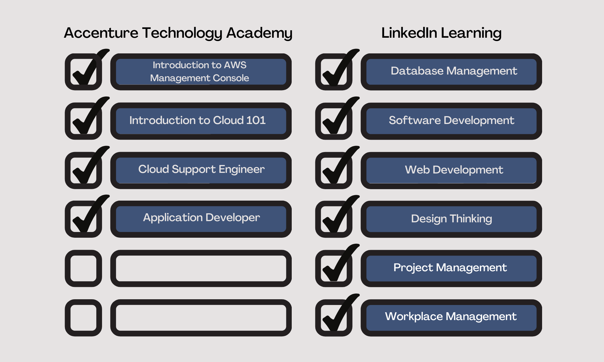
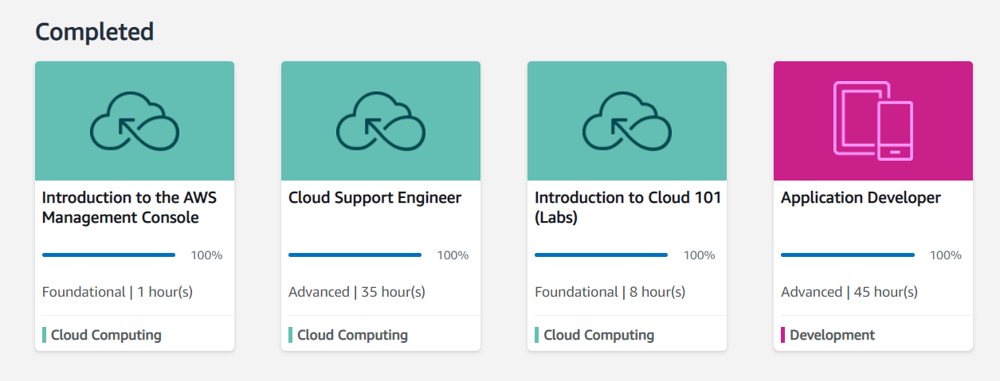

Detailed Discussion of Output

As seen in the checklist above, there are four courses needed to be completed on ATA which are Introduction to AWA Management Console, Introduction to Cloud 101, Cloud Support Engineer, and Application Developer. On the other hand, LinkedIn Learning is divided into two learning modules which are Require and Specialization. On Require Module, there are three modules to finish called Design Thinking, Project Management, and Workplace Management. On Specialization Module, I have chosen Database Management, Software Development, and Web Development.
Accenture Technology Academy (ATA)
AWS Curriculum (Total Engagement Hours: 100 hours Total Credit Hours: 120 hours)
a. Introduction to the AWS Management Console (1h)
b. Introduction to Cloud 101 (Labs) (8h)
c. Cloud Support Engineer (40h)
d. Application Developer (50h)

ATA Progress Bar
1. Introduction to AWS Management Console gives a quick overview of the interface and how to manage AWS services and its billing method. Also, it shows how to set-up, stop, and terminate an EC2 instance.
 Introduction to Cloud 101 Badge
Introduction to Cloud 101 Badge
2. Introduction to Cloud 101 gives an overview on introduction on cloud computing and its benefits and what is AWS and its core services. It provides a hands-on laboratory exercise on AWS core services such as Amazon EC2, Amazon S3, Amazon RDS, Amazon DynamoDB, Amazon VPC, and Amazon IAM. I have received a badge on Credly after finishing the course.
3. Cloud Support Engineer have four modules: Platform, Network, Software Development, and Security. Platform tackles different technologies and operation system needed on how to. Software Development tackles different programming languages such as PHP and Ruby and scripting languages such as CLI, JavaScript, and PowerShell. Network and Security is all about the technology and securities needed to protect the cloud. Every module has quizzes, and you need to have a score of four to pass the quiz.
4. Application Developer have three modules: Software Development, Data and Databases, and Platform. First, Software Development is divided into three parts which are Architecture and DevOps, Programming Scripting, and Web, Mobile and Gaming. Second, Data and Databases is all about an overview on how to create and delete an instance on different databases management system on AWS.
LinkedIn Learning
1. Required Modules is divided into three parts: Design Thinking, Project Management, and Workplace Management. Design Thinking is all about on how to become a problem solver and innovator. It shows on how to improve your thinking skill into a new level. Project Management shows how to become a team member or team leader on a project and how and when to use Agile Methodology. Workplace Management is all about improving your communication on others and what are do's and don’ts on workplace.
Design Thinking Module (Total Engagement Hours: 15 hours Total Credit Hours: 45 hours)
a. Learning Design Thinking: Lead Change in Your Organization by Turi McKinley (2h 8m)
b. Develop Your Creative Thinking and Innovation Skills Learning Path 8 courses (8h)
c. Develop Critical-Thinking, Decision-Making, and Problem-Solving Skills 6 courses (5h)
Project Management Module (Total Engagement Hours: 15 hours Total Credit Hours: 45 hours)
a. Project Management Foundations by Bonnie Biafore (3h 20m)
c. Develop Critical-Thinking, Decision-Making, and Problem-Solving Skills 6 courses (5h)
Workplace Management Module (Total Engagement Hours: 15 hours Total Credit Hours: 45 hours)
a. Develop Your Communication Skills and Interpersonal Influence 9 courses (8h)
b. 5S Workplace Productivity by Gemba Academy (1h 36m)
c. Time Management Fundamentals by Dave Crenshaw (2h 53m)
d. Time Management: Working from Home by Dave Crenshaw (1h 25m)
e. Business Etiquette: Phone, Email, and Text by Suzanna Kaye (58m)
2. Specialization Modules is divided into three parts: Database Management, Software Development, and Web Development. Database Management gives overview on various database management system such as MySQL, PostgreSQL, and MongoDB. Also, some courses serve as a refresher like on data manipulation language, data definition language and normalization. Software Development gives an overview on various programming languages such as C#, Python, and Java. It basically serves as an introductory course on different programming languages and software development. Web Development focuses on building blocks on creating web such as HTML, CSS, JavaScript. Also, it has a introductory course on PHP and PHP Object-Oriented Programming.
Database Management Module (Total Engagement Hours: 20 hours Total Credit Hours: 60 hours)
a. Relational Databases Essential Training (2h 12m)
b. SQL Essential Training (3h)
c. Advance Your Skills in SQL (6h 2m)
d. Become a SQL Developer (9h 24m)
Software Development Module (Total Engagement Hours: 30 hours Total Credit Hours: 90 hours)
a. Become a Software Developer (30h 26m)
Web Development (Total Engagement Hours: 26 hours Total Credit Hours: 87 hours)
a. Become a Web Developer (22h 9m)
b. Learning PHP (4h 41m)
c. PHP: Object-Oriented Programming (3h 53m)
LinkedIn Learning provides exercise files from the instructor for the learner to practice certain topic. Instructors also gives challenges for the learner to solve on its own.
Lastly, every chapter from the courses have short quizzes.